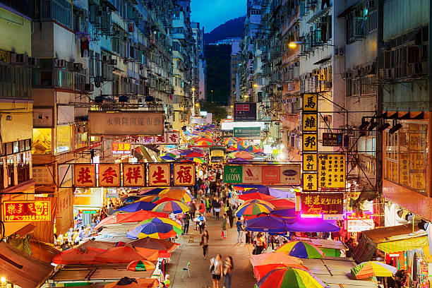
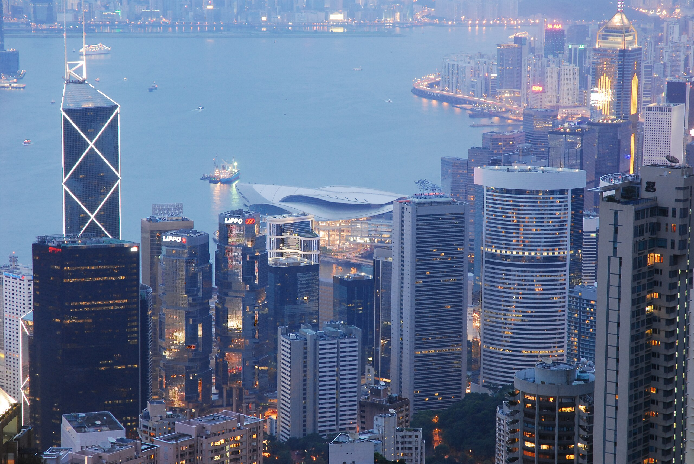
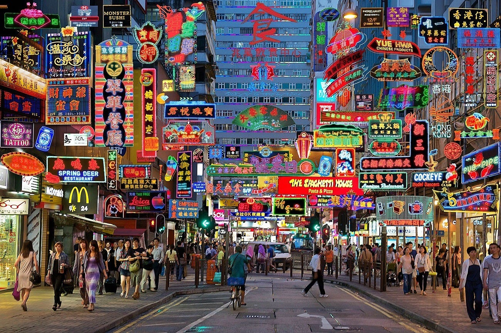
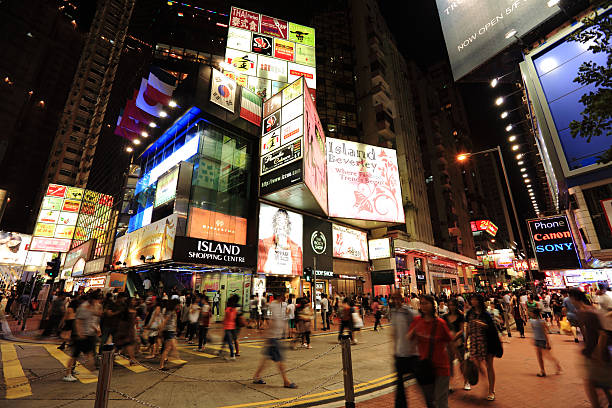

La Ciudad de la Verticalidad
Hong Kong es una metrópolis donde los rascacielos se funden con luces de neón y la vida urbana nunca se detiene. En cada rincón, la tecnología y la intensidad de su energía crean un ambiente totalmente futurista.
Desde Kowloon hasta Central, la ciudad vibra con mercados digitales, mega pantallas y un ritmo acelerado que define su identidad.
📍 Ubicación y Mapa
Hong Kong es una ciudad hiperconectada con una identidad única:
- ⚡ Kowloon - Distrito urbano con alta densidad y mercados digitales.
- 🌆 Central - Centro financiero y tecnológico con arquitectura impresionante.
- 💠 Causeway Bay - Epicentro del comercio tecnológico y luces neón.
Mapa interactivo de Hong Kong
🚀 Avances Tecnológicos y Urbanismo
Hong Kong es una ciudad que rompe los límites de lo tradicional con innovación:
- 🏗️ Infraestructura vertical - Edificios inteligentes y rascacielos ultra modernos.
- 🛸 Transporte autónomo - Pruebas con taxis voladores y automatización.
- 🔮 Conectividad extrema - WiFi masivo y 5G en cada rincón.
🎭 Cultura Urbana y Cyberpunk
Hong Kong combina tecnología, comercio y una estética cyberpunk única:
- 🌆 Densidad de rascacielos - La ciudad con la mayor concentración de edificios altos.
- 📱 Pagos digitales - Economía sin efectivo basada en QR y aplicaciones.
- 🎨 Cultura underground - Mercados tech, graffiti digital y moda futurista.
📷 Galería

Vista nocturna de Hong Kong
Kowloon y su urbanismo
Distrito Central con tecnología avanzada
Calles llenas de luces neón en Hong Kong
Causeway Bay - Comercio tecnológico